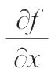

如果我的学业能重新开始，我将遵从柏拉图的教诲，从数学启蒙。
——伽利略·伽利雷
英国生物学家、公知，理查德·道金斯曾经提到，谁都不乐意承认自己在文学方面胸无点墨，但觉得不懂科学倒也无伤大雅，至于数学，那就是完完全全的白板一张。道金斯也不是第一个揭穿这种想法的人——他觉得这已经是陈词滥调了。
当然事实就是这样。谁也不会自夸从没读过一本书，从没看过一幅画，从没——一次也没——听过音乐。如果做个调查，你保证会发现受过教育的成年人里无人不知莎士比亚、伦勃朗、巴赫。他们也可能知道一些大数学家的名字，比如毕达哥拉斯、艾萨克·牛顿、阿尔伯特·爱因斯坦。但是又有多少人听说过莱昂哈德·欧拉、斯里尼瓦瑟·拉马努金或是格奥尔格·康托尔？
或许有那么个时刻，你也曾自问：“这些人是谁？他们的名字如此陌生。”
这些人是大数学家啊，非常伟大的数学家！
我爱好音乐，醉心文学，但我满心相信拉马努金的数学公式毫不逊色于巴赫的音律，康托尔关于无穷的大发现能与莎士比亚的作品同辉。
既然我们把文艺天才与数学天才相提并论，我想指出康托尔精通莎士比亚，爱因斯坦娴于钢琴和小提琴。这种现象很常见，我就知道好多数学家在文学、艺术和音乐方面知识丰富。其实，德国数学家卡尔·魏尔斯特拉斯曾经说过，不懂诗歌的数学家不是好数学家。但是，反过来情况可不同：在文学、音乐、美术界，不少人对数学深恶痛绝。
为什么会这样？为什么这么多人（还是上过学的），羞愧着逃离精妙绝伦、错综复杂、令人如痴如醉的数学世界？
大概，主要原因是数学对于想认识它的人来说非常难，几乎不可接近。没错，数学非常复杂，需要人们花时间、动脑筋去理解它的复杂，有时不得不潜入深渊去获取精美的珍珠。
有一天，我在翻阅数学书时起了写这本书的念头。那时，我注意到我的藏书大概分为以下两类。
1）面向外行人的数学书。有些相当精彩，但是主要讲述数学故事，而非数学本身。
2）面向数学家的数学书。这类也有许多精品，但是只有数学家能读（懂）。
所以我想写本“第三类”数学书。我想给外行人简简单单、清清楚楚地讲两个我觉得最迷人的数学理论——数论和集合论，它们都是跟无穷有关的理论。另外，我也讲述一些数学思维中的策略，有助于读者自学，解决一些引人入胜的数学问题。
我非常期待有好奇心、有思考欲的读者能享受这本书，所以我一定不使用任何“可怕”的数学符号（在本书里你一定看不到▽f（x1，…，xn）、

、∫∫∫、limx→∞什么的）。我只用最基础的数学运算（加减乘除，还有一些“进阶”术语，比如乘方和开方），但这并不是说你不需要深入思考。我也尽量使语言风格轻松、令人愉悦。希望大家能喜欢这本书。